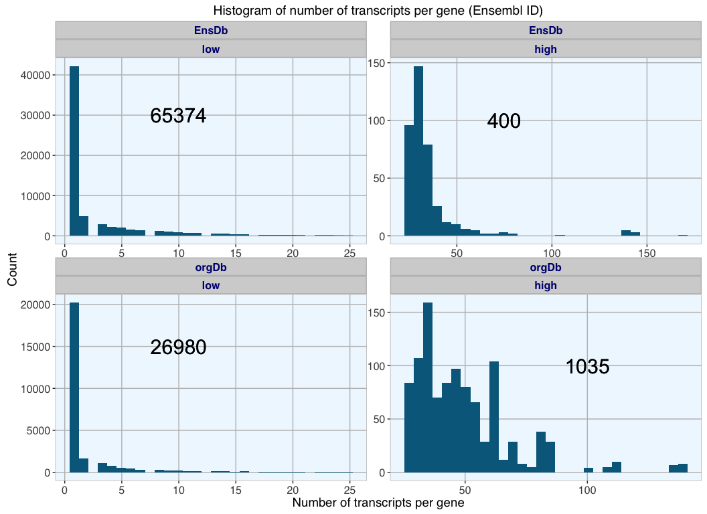
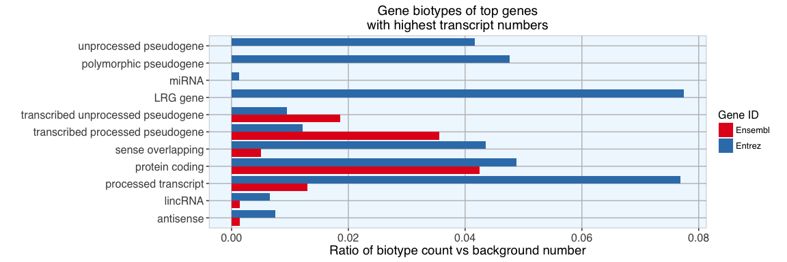
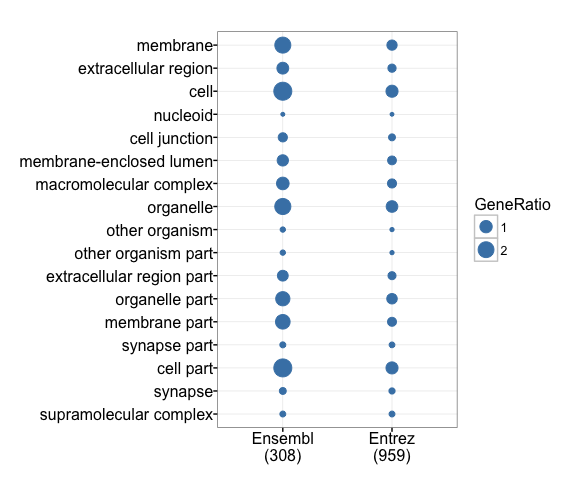

How many transcripts and proteins do genes have?
In Exploring the human genome (Part 1) - Gene Annotations I examined Ensembl, Entrez and HGNC gene annotations with AnnotationDbi via three R packages: org.Hs.eg.db, EnsDb.Hsapiens.v79 and TxDb.Hsapiens.UCSC.hg38.knownGene.
Now, I want to know how many transcripts there are for genes in these databases.
What is a transcript?
While a gene is defined as a unit of DNA information which encodes for the production of a protein, it is really more a concept than an actual physical unit. Human genes conists of exons and introns, which can often be transcribed in different combinations - a process called alternative splicing.
“While the concept of a gene has been helpful in defining the relationship of a portion of a genome to a phenotype, this traditional term may not be as useful as it once was. Currently, “gene” has come to refer principally to a genomic region producing a polyadenylated mRNA that encodes a protein. However, the recent emergence of a large collection of unannotated transcripts with apparently little protein coding capacity, collectively called transcripts of unknown function (TUFs), has begun to blur the physical boundaries and genomic organization of genic regions with noncoding transcripts often overlapping protein-coding genes on the same (sense) and opposite strand (antisense). Moreover, they are often located in intergenic regions, making the genic portions of the human genome an interleaved network of both annotated polyadenylated and nonpolyadenylated transcripts, including splice variants with novel 5′ ends extending hundreds of kilobase. This complex transcriptional organization and other recently observed features of genomes argue for the reconsideration of the term “gene” and suggests that transcripts may be used to define the operational unit of a genome.” Thomas Gingeras, Genome Res. 2007
org.Hs.eg.db
With org.Hs.eg.db I am using Entrez and Ensembl IDs to obtain Ensembl transcript IDs, which show splice variants of a gene, including protein-coding and non-coding transcripts.
library(AnnotationDbi)
library(org.Hs.eg.db)
ENTREZID_org <- keys(org.Hs.eg.db, keytype = "ENTREZID")
ENSEMBL_org <- keys(org.Hs.eg.db, keytype = "ENSEMBL")
# Summarize number of transcripts per gene Entrez ID
org_trans_entrez <- AnnotationDbi::select(org.Hs.eg.db, keys = ENTREZID_org, columns = c("ENSEMBLTRANS"), keytype = "ENTREZID")
org_transcript_num_table_entrez <- as.data.frame(table(org_trans_entrez$ENTREZID))
colnames(org_transcript_num_table_entrez) <- c("Entrez", "orgDb")
# Summarize number of transcripts per gene Ensembl ID
org_trans_ensembl <- AnnotationDbi::select(org.Hs.eg.db, keys = ENSEMBL_org, columns = c("ENSEMBLTRANS"), keytype = "ENSEMBL")
org_transcript_num_table_ensembl <- as.data.frame(table(org_trans_ensembl$ENSEMBL))
colnames(org_transcript_num_table_ensembl) <- c("Ensembl", "orgDb")
# how many NAs are in each column?
sapply(org_trans_entrez, function(x) sum(is.na(x)))
## ENTREZID ENSEMBLTRANS
## 0 52081
sapply(org_trans_ensembl, function(x) sum(is.na(x)))
## ENSEMBL ENSEMBLTRANS
## 0 17678
head(org_trans_entrez)
## ENTREZID ENSEMBLTRANS
## 1 1 <NA>
## 2 2 <NA>
## 3 3 ENST00000543404
## 4 3 ENST00000566278
## 5 3 ENST00000545343
## 6 3 ENST00000544183
head(org_trans_ensembl)
## ENSEMBL ENSEMBLTRANS
## 1 ENSG00000121410 <NA>
## 2 ENSG00000175899 <NA>
## 3 ENSG00000256069 ENST00000543404
## 4 ENSG00000256069 ENST00000566278
## 5 ENSG00000256069 ENST00000545343
## 6 ENSG00000256069 ENST00000544183
Strangely, some genes, like A1BG (Entrez ID 1) are listed with one gene ID but no Ensembl transcript ID. This is weird, especially since I happen to know for this particular gene that it has several transcripts. Also, because each gene must have at least one transcript, all NAs are counted as 1 transcript in the summary table.
Let’s check other databases…
TxDb.Hsapiens.UCSC.hg38.knownGene
TxDb.Hsapiens.UCSC.hg38.knownGene only has Entrez IDs to identify genes and UCSC transcript ID to identify transcripts.
library(TxDb.Hsapiens.UCSC.hg38.knownGene)
ENTREZID_TxDb <- keys(TxDb.Hsapiens.UCSC.hg38.knownGene, keytype = "GENEID")
TxDb_trans <- AnnotationDbi::select(TxDb.Hsapiens.UCSC.hg38.knownGene, keys = ENTREZID_TxDb, columns = c("TXID"), keytype = "GENEID")
# Summarize number of transcripts per gene Entrez ID
TxDb_transcript_num_table_entrez <- as.data.frame(table(TxDb_trans$GENEID))
colnames(TxDb_transcript_num_table_entrez) <- c("Entrez", "TxDb")
# how many NAs are in each column?
sapply(TxDb_trans, function(x) sum(is.na(x)))
## GENEID TXID
## 0 0
head(TxDb_trans)
## GENEID TXID
## 1 1 166436
## 2 1 166437
## 3 1 166438
## 4 1 166439
## 5 1 166440
## 6 1 166441
Here, we don’t have NAs in the data and in contrast to org.Hs.eg.db we find at least six transcripts for A1BG.
EnsDb.Hsapiens.v79
Like org.Hs.eg.db EnsDb.Hsapiens.v79 has Entrez and Ensembl IDs in reference to Ensembl transcript IDs.
library(EnsDb.Hsapiens.v79)
ENSEMBL_EnsDb <- keys(EnsDb.Hsapiens.v79, keytype = "GENEID")
ENTREZ_EnsDb <- keys(EnsDb.Hsapiens.v79, keytype = "ENTREZID")
EnsDb_trans_ensembl <- ensembldb::select(EnsDb.Hsapiens.v79, keys = ENSEMBL_EnsDb, columns = c("TXID"), keytype = "GENEID")
EnsDb_trans_entrez <- ensembldb::select(EnsDb.Hsapiens.v79, keys = ENTREZ_EnsDb, columns = c("TXID"), keytype = "ENTREZID")
# somehow there are empty fields in the Entrez ID column, replacing them with NA
EnsDb_trans_entrez[EnsDb_trans_entrez == ""] <- NA
# how many NAs are in each column?
sapply(EnsDb_trans_entrez, function(x) sum(is.na(x)))
## ENTREZID TXID
## 47828 0
# and removing NA rows
EnsDb_trans_entrez <- EnsDb_trans_entrez[!is.na(EnsDb_trans_entrez$ENTREZID), ]
# order by Entrez ID to compare with other databases
EnsDb_trans_entrez <- EnsDb_trans_entrez[order(EnsDb_trans_entrez$ENTREZID),]
head(EnsDb_trans_ensembl)
## GENEID TXID
## 1 ENSG00000000003 ENST00000373020
## 2 ENSG00000000003 ENST00000496771
## 3 ENSG00000000003 ENST00000494424
## 4 ENSG00000000003 ENST00000612152
## 5 ENSG00000000003 ENST00000614008
## 6 ENSG00000000005 ENST00000373031
head(EnsDb_trans_entrez)
## ENTREZID TXID
## 95915 1 ENST00000596924
## 95916 1 ENST00000263100
## 95917 1 ENST00000595014
## 95918 1 ENST00000598345
## 95919 1 ENST00000600966
## 135994 10 ENST00000286479
Here, we find five transcripts for A1BG.
# Summarize number of transcripts per gene Entrez ID
EnsDb_transcript_num_table_entrez <- as.data.frame(table(EnsDb_trans_entrez$ENTREZID))
colnames(EnsDb_transcript_num_table_entrez) <- c("Entrez", "EnsDb")
# Summarize number of transcripts per gene Ensembl ID
EnsDb_transcript_num_table_ensembl <- as.data.frame(table(EnsDb_trans_ensembl$GENEID))
colnames(EnsDb_transcript_num_table_ensembl) <- c("Ensembl", "EnsDb")
# In the Entrez column, there are some with multiple entries
# divide entries with multiple gene names into one row per gene/ entry
head(EnsDb_transcript_num_table_entrez[grep(";", EnsDb_transcript_num_table_entrez$Entrez), ])
## Entrez EnsDb
## 13 100033415;100033421 1
## 15 100033417;100033419 2
## 18 100033421;100033415 1
## 40 100033446;100033449 1
## 42 100033448;100033803;100033817;100033810 2
## 43 100033449;100033446 1
library(splitstackshape)
out <- as.data.frame(cSplit(EnsDb_transcript_num_table_entrez, splitCols = "Entrez", sep = ";", direction = "long"), stringsAsFactors = FALSE)
out$Entrez <- as.character(out$Entrez)
# remove duplicates and take the mean
library(plyr)
EnsDb_transcript_num_table_entrez <- ddply(out, "Entrez", numcolwise(mean))
Comparison of transcript numbers per database package
The majority of genes have only one transcript. The number of genes with more transcripts decreases with number of transcripts; this can be seen in the plots below.
Entrez IDs
# merging datasets by Entrez ID
library(dplyr)
transcript_num_table_entrez <- full_join(org_transcript_num_table_entrez, TxDb_transcript_num_table_entrez, by = "Entrez")
transcript_num_table_entrez <- full_join(transcript_num_table_entrez, EnsDb_transcript_num_table_entrez, by = "Entrez")
# gather for plotting
library(tidyr)
transcript_num_table_gather_entrez <- transcript_num_table_entrez %>%
gather(DB, count, orgDb:EnsDb)
# How many counts are NA?
sapply(transcript_num_table_gather_entrez, function(x) sum(is.na(x)))
## Entrez DB count
## 0 0 71066
# removing rows with NA counts
transcript_num_table_gather_entrez <- transcript_num_table_gather_entrez[!is.na(transcript_num_table_gather_entrez$count), ]
# because there are only a handful of genes with many transcripts, they can't be plotted together with genes with few transcripts
# separating them in high and low
transcript_num_table_gather_entrez$group <- ifelse(transcript_num_table_gather_entrez$count > 25, "high", "low")
# setting factor levels
f = c("low", "high")
transcript_num_table_gather_entrez <- within(transcript_num_table_gather_entrez, group <- factor(group, levels = f))
# setting my custom theme of choice
library(ggplot2)
my_theme <- function(base_size = 12, base_family = "sans"){
theme_grey(base_size = base_size, base_family = base_family) +
theme(
axis.text = element_text(size = 12),
axis.title = element_text(size = 14),
panel.grid.major = element_line(colour = "grey"),
panel.grid.minor = element_blank(),
panel.background = element_rect(fill = "aliceblue"),
strip.background = element_rect(fill = "lightgrey", color = "grey", size = 1),
strip.text = element_text(face = "bold", size = 12, colour = "navy"),
legend.position = "bottom",
panel.margin = unit(.05, "lines"),
panel.border = element_rect(color = "grey", fill = NA, size = 0.5)
)
}
p <- ggplot(data = transcript_num_table_gather_entrez, aes(as.numeric(count))) +
geom_histogram(fill = "deepskyblue4") +
my_theme() +
labs(title = "Histogram of number of transcripts per gene (Entrez ID)",
x = "Number of transcripts per gene", y = "Count") +
facet_wrap(DB ~ group, scales = "free", ncol = 2)
ann_text_entrez <- data.frame(x = c(20, 300, 20, 100, 20, 100),
y = c(4000, 350, 40000, 15, 5000, 280),
group = rep(c("low", "high"), 3),
DB = rep(c("EnsDb", "orgDb", "TxDb"), each = 2),
labs = c(paste(length(which(transcript_num_table_gather_entrez$group == "low" &
transcript_num_table_gather_entrez$DB == "EnsDb"))),
paste(length(which(transcript_num_table_gather_entrez$group == "high" &
transcript_num_table_gather_entrez$DB == "EnsDb"))),
paste(length(which(transcript_num_table_gather_entrez$group == "low" &
transcript_num_table_gather_entrez$DB == "orgDb"))),
paste(length(which(transcript_num_table_gather_entrez$group == "high" &
transcript_num_table_gather_entrez$DB == "orgDb"))),
paste(length(which(transcript_num_table_gather_entrez$group == "low" &
transcript_num_table_gather_entrez$DB == "TxDb"))),
paste(length(which(transcript_num_table_gather_entrez$group == "high" &
transcript_num_table_gather_entrez$DB == "TxDb")))))
p + geom_text(data = ann_text_entrez, aes(x, y, label = labs, group = NULL), size = 8)

This time, orgDb has the highest number of Entrez ID gene entries with corresponding transcript information, the majority of which have fewer than 25 transcripts (59984 genes); only 152 genes have more than 25 transcripts. EnsDb and TxDB have comparable numbers of gene entries, also for genes with few (23971 and 24669 genes) and many transcripts (566 and 552 genes).
Ensembl IDs
# merging datasets by Ensembl ID
transcript_num_table_ensembl <- full_join(org_transcript_num_table_ensembl, EnsDb_transcript_num_table_ensembl, by = "Ensembl")
# gather for plotting
transcript_num_table_gather_ensembl <- transcript_num_table_ensembl %>%
gather(DB, count, orgDb:EnsDb)
# How many counts are NA?
sapply(transcript_num_table_gather_ensembl, function(x) sum(is.na(x)))
## Ensembl DB count
## 0 0 38659
# removing rows with NA counts
transcript_num_table_gather_ensembl <- transcript_num_table_gather_ensembl[!is.na(transcript_num_table_gather_ensembl$count), ]
# because there are only a handful of genes with many transcripts, they can't be plotted together with genes with few transcripts
# separating them in high and low
transcript_num_table_gather_ensembl$group <- ifelse(transcript_num_table_gather_ensembl$count > 25, "high", "low")
# setting factor levels
f = c("low", "high")
transcript_num_table_gather_ensembl <- within(transcript_num_table_gather_ensembl, group <- factor(group, levels = f))
p <- ggplot(data = transcript_num_table_gather_ensembl, aes(as.numeric(count))) +
geom_histogram(fill = "deepskyblue4") +
my_theme() +
labs(title = "Histogram of number of transcripts per gene (Ensembl ID)",
x = "Number of transcripts per gene", y = "Count") +
facet_wrap(DB ~ group, scales = "free", ncol = 2)
ann_text_ensembl <- data.frame(x = c(10, 75, 10, 100),
y = c(30000, 100, 15000, 100),
group = rep(c("low", "high"), 4),
DB = rep(c("EnsDb", "orgDb"), each = 2),
labs = c(paste(length(which(transcript_num_table_gather_ensembl$group == "low" &
transcript_num_table_gather_ensembl$DB == "EnsDb"))),
paste(length(which(transcript_num_table_gather_ensembl$group == "high" &
transcript_num_table_gather_ensembl$DB == "EnsDb"))),
paste(length(which(transcript_num_table_gather_ensembl$group == "low" &
transcript_num_table_gather_ensembl$DB == "orgDb"))),
paste(length(which(transcript_num_table_gather_ensembl$group == "high" &
transcript_num_table_gather_ensembl$DB == "orgDb")))))
p + geom_text(data = ann_text_ensembl, aes(x, y, label = labs, group = NULL), size = 8)

For Ensembl gene IDs EnsDb has the higher number of entries with transcript information; most of these genes (65374) have fewer than 25 transcripts. While orgDb has fewer Ensembl-transcript entries, proportionally more have a high number of transcripts (1035 vs 400), while 26980 genes have low transcript numbers.
Comparison of transcript numbers per gene
Now that we know what the distribution of transcript numbers per gene is in different database packages, I want to directly compare the numbers of transcripts that are identified for each gene.
# for comparison replacing NAs with 0
transcript_num_table_ensembl_NAtozero <- transcript_num_table_ensembl
transcript_num_table_ensembl_NAtozero[is.na(transcript_num_table_ensembl_NAtozero)] <- 0
transcript_num_table_entrez_NAtozero <- transcript_num_table_entrez
transcript_num_table_entrez_NAtozero[is.na(transcript_num_table_entrez_NAtozero)] <- 0
library(ggrepel)
p1 <- ggplot(transcript_num_table_ensembl_NAtozero, aes(x = orgDb, y = EnsDb)) +
geom_abline(linetype="dashed") +
geom_point(colour = "deepskyblue4", alpha = 0.3) +
my_theme() +
geom_smooth(size = 1, color = "black") + # Add a loess smoothed fit curve with confidence region
labs(title = "Number of transcripts per Ensembl ID") +
geom_text_repel(data = subset(transcript_num_table_ensembl_NAtozero, orgDb > 140 | EnsDb > 150), aes(label = Ensembl))
p2 <- ggplot(transcript_num_table_entrez_NAtozero, aes(x = orgDb, y = TxDb)) +
geom_abline(linetype="dashed") +
geom_point(colour = "deepskyblue4", alpha = 0.3) +
my_theme() +
geom_smooth(size = 1, color = "black") +
labs(title = "Number of transcripts per Entrez ID") +
geom_text_repel(data = subset(transcript_num_table_entrez_NAtozero, orgDb > 100 | TxDb > 200), aes(label = Entrez))
p3 <- ggplot(transcript_num_table_entrez_NAtozero, aes(x = orgDb, y = EnsDb)) +
geom_abline(linetype="dashed") +
geom_point(colour = "deepskyblue4", alpha = 0.3) +
my_theme() +
geom_smooth(size = 1, color = "black") +
labs(title = "Number of transcripts per Entrez ID") +
geom_text_repel(data = subset(transcript_num_table_entrez_NAtozero, orgDb > 100 | EnsDb > 900), aes(label = Entrez))
p4 <- ggplot(transcript_num_table_entrez_NAtozero, aes(x = TxDb, y = EnsDb)) +
geom_abline(linetype="dashed") +
geom_point(colour = "deepskyblue4", alpha = 0.3) +
my_theme() +
geom_smooth(size = 1, color = "black") +
labs(title = "Number of transcripts per Entrez ID") +
geom_text_repel(data = subset(transcript_num_table_entrez_NAtozero, TxDb > 150 | EnsDb > 900), aes(label = Entrez))
library(gridExtra)
library(grid)
grid.arrange(p1, p2, p3, p4, ncol = 2)

The plots above show scatterplots with fitted loess curves with confidence regions of the numbers of transcripts for each gene with either Entrez or Ensembl entries from different database packages; dashed lines show 1:1 ratio. For most extreme genes, the Ensembl/ Entrez ID is given in the plots.
While some genes do have the same number of transcripts in different database packages, the majority do not. Entrez IDs seem to give a better correlation than Ensembl IDs, except for a few extreme outliers.
Is there a correlation between number of transcripts and number of exons of a gene?
Because the number of exons a gene has exponentially increases the number of potential transcripts produced via alternative splicing, it would make sense if the number of exons correlates with the number of transcripts of a gene. However, not all combinations of exons will produce a functioning protein, so there won’t be as many transcripts as theoretically possible.
Exon IDs are only available in TxDb.Hsapiens.UCSC.hg38.knownGene and EnsDb.Hsapiens.v79.
TxDb_exons <- AnnotationDbi::select(TxDb.Hsapiens.UCSC.hg38.knownGene, keys = ENTREZID_TxDb, columns = c("EXONID"), keytype = "GENEID")
EnsDb_exons_ensembl <- ensembldb::select(EnsDb.Hsapiens.v79, keys = ENSEMBL_EnsDb, columns = c("EXONID"), keytype = "GENEID")
EnsDb_exons_entrez <- ensembldb::select(EnsDb.Hsapiens.v79, keys = ENTREZ_EnsDb, columns = c("EXONID"), keytype = "ENTREZID")
# summarize number of exons per gene
TxDb_exons_num_table_entrez <- as.data.frame(table(TxDb_exons$GENEID))
EnsDb_exons_num_table_ensembl <- as.data.frame(table(EnsDb_exons_ensembl$GENEID))
EnsDb_exons_num_table_entrez <- as.data.frame(table(EnsDb_exons_entrez$ENTREZID))
# there are over 98000 entries without corresponding Entrez ID, removing those
EnsDb_exons_num_table_entrez <- EnsDb_exons_num_table_entrez[-1, ]
EnsDb_trans_vs_exons_ensembl <- full_join(EnsDb_transcript_num_table_ensembl, EnsDb_exons_num_table_ensembl, by = c("Ensembl" = "Var1"))
colnames(EnsDb_trans_vs_exons_ensembl)[2:3] <- c("EnsDb_transcripts", "EnsDb_exons")
EnsDb_trans_vs_exons_entrez <- full_join(EnsDb_transcript_num_table_entrez, EnsDb_exons_num_table_entrez, by = c("Entrez" = "Var1"))
colnames(EnsDb_trans_vs_exons_entrez)[2:3] <- c("EnsDb_transcripts", "EnsDb_exons")
TxDb_trans_vs_exons_entrez <- full_join(TxDb_transcript_num_table_entrez, TxDb_exons_num_table_entrez, by = c("Entrez" = "Var1"))
colnames(TxDb_trans_vs_exons_entrez)[2:3] <- c("TxDb_transcripts", "TxDb_exons")
p1 <- ggplot(EnsDb_trans_vs_exons_ensembl, aes(x = EnsDb_transcripts, y = EnsDb_exons)) +
geom_abline(linetype="dashed") +
geom_point(colour = "deepskyblue4", alpha = 0.3) +
my_theme() +
geom_smooth(size = 1, color = "black") +
labs(title = "Number of transcripts vs number of exons\nper Ensembl ID in EnsDb") +
geom_text_repel(data = subset(EnsDb_trans_vs_exons_ensembl, EnsDb_transcripts > 150 | EnsDb_exons > 300), aes(label = Ensembl))
p2 <- ggplot(EnsDb_trans_vs_exons_entrez, aes(x = EnsDb_transcripts, y = EnsDb_exons)) +
geom_abline(linetype="dashed") +
geom_point(colour = "deepskyblue4", alpha = 0.3) +
my_theme() +
geom_smooth(size = 1, color = "black") +
labs(title = "Number of transcripts vs number of exons\nper Entrez ID in EnsDb") +
geom_text_repel(data = subset(EnsDb_trans_vs_exons_entrez, EnsDb_transcripts > 300 | EnsDb_exons > 1000), aes(label = Entrez))
p3 <- ggplot(TxDb_trans_vs_exons_entrez, aes(x = TxDb_transcripts, y = TxDb_exons)) +
geom_abline(linetype="dashed") +
geom_point(colour = "deepskyblue4", alpha = 0.3) +
my_theme() +
geom_smooth(size = 1, color = "black") +
labs(title = "Number of transcripts vs number of exons\nper Entrez ID in TxDb") +
geom_text_repel(data = subset(TxDb_trans_vs_exons_entrez, TxDb_transcripts > 200 | TxDb_exons > 400), aes(label = Entrez))
grid.arrange(p1, p2, p3, ncol = 1)

Indeed, there is a reasonably good correlation between number of transcripts and number of exons ins genes. The scatterplots above show transcript vs exon number per gene in the three database packages with fitted loess curves with confidence regions. As expected, the increase is not exponential as theoretically possible, but stronger than 1:1. For Entrez IDs, in both EnsDb and TxDbm genes with up to about 100 transcripts show a steeper correlation than genes with more than 100 transcripts. For Ensembl IDs the cutoff is around 40 transcripts.
What genes have many exons but few transcripts?
Interestingly, there are a couple of genes with many exons but only few transcripts. To find out more about these genes, I will compare their proportion of gene biotypes.
# gene biotypes are only available in EnsDb
EnsDb_trans_vs_exons_ensembl$ratio <- EnsDb_trans_vs_exons_ensembl$EnsDb_exons/EnsDb_trans_vs_exons_ensembl$EnsDb_transcripts
EnsDb_trans_vs_exons_ensembl_genes <- as.character(EnsDb_trans_vs_exons_ensembl[order(EnsDb_trans_vs_exons_ensembl$ratio, decreasing = TRUE), "Ensembl"][1:100])
EnsDb_trans_vs_exons_entrez$ratio <- EnsDb_trans_vs_exons_entrez$EnsDb_exons/EnsDb_trans_vs_exons_entrez$EnsDb_transcripts
EnsDb_trans_vs_exons_entrez_genes <- as.character(EnsDb_trans_vs_exons_entrez[order(EnsDb_trans_vs_exons_entrez$ratio, decreasing = TRUE), "Entrez"][1:100])
# get all gene biotypes for all gene IDs
biotypes_exons_trans_EnsDb_ensembl_all <- ensembldb::select(EnsDb.Hsapiens.v79, keys = EnsDb_trans_vs_exons_ensembl_genes,
columns = "GENEBIOTYPE", keytype = "GENEID")
biotypes_exons_trans_EnsDb_entrez_all <- ensembldb::select(EnsDb.Hsapiens.v79, keys = EnsDb_trans_vs_exons_entrez_genes,
columns = "GENEBIOTYPE", keytype = "ENTREZID")
# get all gene biotypes for all gene IDs
biotypes_EnsDb_ensembl_all <- ensembldb::select(EnsDb.Hsapiens.v79, keys = keys(EnsDb.Hsapiens.v79, keytype = "GENEID"),
columns = "GENEBIOTYPE", keytype = "GENEID")
biotypes_EnsDb_entrez_all <- ensembldb::select(EnsDb.Hsapiens.v79, keys = keys(EnsDb.Hsapiens.v79, keytype = "ENTREZID"),
columns = "GENEBIOTYPE", keytype = "ENTREZID")
# how many NAs are in each column?
sapply(biotypes_exons_trans_EnsDb_ensembl_all, function(x) sum(is.na(x)))
## GENEID GENEBIOTYPE
## 0 0
sapply(biotypes_exons_trans_EnsDb_entrez_all, function(x) sum(is.na(x)))
## ENTREZID GENEBIOTYPE
## 0 0
# summary table of number of genebiotypes
biotypes_exons_trans_EnsDb_ensembl_all_num_table <- as.data.frame(table(biotypes_exons_trans_EnsDb_ensembl_all$GENEBIOTYPE))
biotypes_exons_trans_EnsDb_entrez_all_num_table <- as.data.frame(table(biotypes_exons_trans_EnsDb_entrez_all$GENEBIOTYPE))
# subset to keep only those biotypes that are among the top genes
biotypes_EnsDb_ensembl_all_subs <- biotypes_EnsDb_ensembl_all[which(biotypes_EnsDb_ensembl_all$GENEBIOTYPE %in%
unique(biotypes_exons_trans_EnsDb_ensembl_all$GENEBIOTYPE)), ]
biotypes_EnsDb_entrez_all_subs <- biotypes_EnsDb_entrez_all[which(biotypes_EnsDb_entrez_all$GENEBIOTYPE %in%
unique(biotypes_exons_trans_EnsDb_entrez_all$GENEBIOTYPE)), ]
# summary table of biotypes background (all genes)
biotypes_EnsDb_ensembl_all_subs_table <- as.data.frame(table(biotypes_EnsDb_ensembl_all_subs$GENEBIOTYPE))
biotypes_EnsDb_entrez_all_subs_table <- as.data.frame(table(biotypes_EnsDb_entrez_all_subs$GENEBIOTYPE))
# add background number of biotypes to number among top genes
biotypes_EnsDb_ensembl_top_num_table <- merge(biotypes_exons_trans_EnsDb_ensembl_all_num_table, biotypes_EnsDb_ensembl_all_subs_table, by = "Var1", all.x = TRUE)
biotypes_EnsDb_entrez_top_num_table <- merge(biotypes_exons_trans_EnsDb_entrez_all_num_table, biotypes_EnsDb_entrez_all_subs_table, by = "Var1", all.x = TRUE)
# merge
biotypes_top_num_table <- merge(biotypes_EnsDb_ensembl_top_num_table, biotypes_EnsDb_entrez_top_num_table, by = "Var1", all = TRUE)
colnames(biotypes_top_num_table) <- c("GENEBIOTYPE", "Ensembl_top", "Ensembl_bg", "Entrez_top", "Entrez_bg")
biotypes_top_num_table$Ensembl <- biotypes_top_num_table$Ensembl_top/biotypes_top_num_table$Ensembl_bg
biotypes_top_num_table$Entrez <- biotypes_top_num_table$Entrez_top/biotypes_top_num_table$Entrez_bg
# gather for plotting
biotypes_top_num_table_gather <- biotypes_top_num_table[, c(1, 6, 7)] %>%
gather(GENEBIOTYPE, count, Ensembl:Entrez)
colnames(biotypes_top_num_table_gather)[2] <- "Gene_ID"
# replace NA with 0
biotypes_top_num_table_gather[is.na(biotypes_top_num_table_gather)] <- 0
ggplot(biotypes_top_num_table_gather, aes(x = factor(GENEBIOTYPE), y = count, fill = Gene_ID)) +
geom_bar(stat = "identity", position = "dodge") +
my_theme() +
theme(legend.position = "right") + coord_flip() +
labs(title = "Gene biotypes of genes with many exons but few transcripts", x = "", y = "Ratio of biotype count vs background number",
fill = "Gene ID") +
scale_x_discrete(breaks = biotypes_top_num_table_gather$GENEBIOTYPE,
labels = gsub("_", " ", biotypes_top_num_table_gather$GENEBIOTYPE)) +
scale_fill_brewer(palette = "Set1")

Compared to the background distribution of biotypes, the proportionally most strongly represented group are LRG genes. As defined by Ensembl’s glossary:
“An LRG (Locus Reference Genomic) is a fixed sequence, independent of the genome, specifically created for the diagnostic community to record DNA sequence variation on a fixed framework. Sequence variants in LSDBs (Locus Specific Databases) are reported using LRG sequences.”
Other than this, there are only protein coding, processed and pseudogenes among genes with many exons and few transcripts. So, nothing exceptional about these genes’s biotypes.
What types of genes have the most transcripts?
Is there a biological function associated with having many transcripts? In order to find out more about these genes, I am looking at
- their biotypes and
- for over-represented gene ontology (GO) categories.
# mean number of transcripts over all database packages
mean_num_transcripts_ensembl <- data.frame(mean_num_transcripts = rowMeans(transcript_num_table_ensembl_NAtozero[, -1]),
row.names = transcript_num_table_ensembl_NAtozero[, 1])
mean_num_transcripts_entrez <- data.frame(mean_num_transcripts = rowMeans(transcript_num_table_entrez_NAtozero[, -1]),
row.names = transcript_num_table_entrez_NAtozero[, 1])
# standard error of mean
mean_num_transcripts_ensembl$sem <- apply(transcript_num_table_ensembl_NAtozero[, -1], 1, function(x) sd(x)/sqrt(length(x)))
mean_num_transcripts_entrez$sem <- apply(transcript_num_table_entrez_NAtozero[, -1], 1, function(x) sd(x)/sqrt(length(x)))
# ranking the mean
mean_num_transcripts_ensembl$rank <- rank(mean_num_transcripts_ensembl$mean_num_transcripts)
mean_num_transcripts_ensembl <- mean_num_transcripts_ensembl[order(mean_num_transcripts_ensembl$rank, decreasing = TRUE), ]
mean_num_transcripts_entrez$rank <- rank(mean_num_transcripts_entrez$mean_num_transcripts)
mean_num_transcripts_entrez <- mean_num_transcripts_entrez[order(mean_num_transcripts_entrez$rank, decreasing = TRUE), ]
I am picking the top 1000 genes with highest mean number of transcripts.
# picking top genes
mean_num_transcripts_ensembl_top <- mean_num_transcripts_ensembl[1:1000, ]
mean_num_transcripts_entrez_top <- mean_num_transcripts_entrez[1:1000, ]
# distribution of mean number of transcripts
p1 <- ggplot(mean_num_transcripts_ensembl_top, aes(x=mean_num_transcripts)) + geom_density(fill="navy") + my_theme() +
labs(title = "Mean number of transcripts\nper Ensembl ID for the top genes", x = "mean number of transcripts pr gene")
p2 <- ggplot(mean_num_transcripts_entrez_top, aes(x=mean_num_transcripts)) + geom_density(fill="navy") + my_theme() +
labs(title = "Mean number of transcripts\nper Entrez ID for the top genes", x = "mean number of transcripts per gene")
grid.arrange(p1, p2, ncol = 1)

The density distribution of the mean number of transcripts per gene (mean over database packages) for the top genes with highest transcript numbers shows the stark difference between Ensembl and Entrez IDs.
Gene biotypes of top genes with highest mean number of transcripts
biotypes_EnsDb_ensembl_top <- ensembldb::select(EnsDb.Hsapiens.v79, keys = rownames(mean_num_transcripts_ensembl_top),
columns = "GENEBIOTYPE", keytype = "GENEID")
biotypes_EnsDb_entrez_top <- ensembldb::select(EnsDb.Hsapiens.v79, keys = rownames(mean_num_transcripts_entrez_top),
columns = "GENEBIOTYPE", keytype = "ENTREZID")
# how many NAs are in each column?
sapply(biotypes_EnsDb_ensembl_top, function(x) sum(is.na(x)))
## GENEID GENEBIOTYPE
## 0 0
sapply(biotypes_EnsDb_entrez_top, function(x) sum(is.na(x)))
## ENTREZID GENEBIOTYPE
## 0 0
# summary table of number of genebiotypes
biotypes_EnsDb_ensembl_top_num_table <- as.data.frame(table(biotypes_EnsDb_ensembl_top$GENEBIOTYPE))
biotypes_EnsDb_entrez_top_num_table <- as.data.frame(table(biotypes_EnsDb_entrez_top$GENEBIOTYPE))
# subset to keep only those biotypes that are among the top genes
biotypes_EnsDb_ensembl_all_subs <- biotypes_EnsDb_ensembl_all[which(biotypes_EnsDb_ensembl_all$GENEBIOTYPE %in%
unique(biotypes_EnsDb_ensembl_top_num_table$Var1)), ]
biotypes_EnsDb_entrez_all_subs <- biotypes_EnsDb_entrez_all[which(biotypes_EnsDb_entrez_all$GENEBIOTYPE %in%
unique(biotypes_EnsDb_entrez_top_num_table$Var1)), ]
# summary table of biotypes background (all genes)
biotypes_EnsDb_ensembl_all_subs_table <- as.data.frame(table(biotypes_EnsDb_ensembl_all_subs$GENEBIOTYPE))
biotypes_EnsDb_entrez_all_subs_table <- as.data.frame(table(biotypes_EnsDb_entrez_all_subs$GENEBIOTYPE))
# add background number of biotypes to number among top genes
biotypes_EnsDb_ensembl_top_num_table <- merge(biotypes_EnsDb_ensembl_top_num_table, biotypes_EnsDb_ensembl_all_subs_table, by = "Var1", all.x = TRUE)
biotypes_EnsDb_entrez_top_num_table <- merge(biotypes_EnsDb_entrez_top_num_table, biotypes_EnsDb_entrez_all_subs_table, by = "Var1", all.x = TRUE)
# merge
biotypes_top_num_table <- merge(biotypes_EnsDb_ensembl_top_num_table, biotypes_EnsDb_entrez_top_num_table, by = "Var1", all = TRUE)
colnames(biotypes_top_num_table) <- c("GENEBIOTYPE", "Ensembl_top", "Ensembl_bg", "Entrez_top", "Entrez_bg")
biotypes_top_num_table$Ensembl <- biotypes_top_num_table$Ensembl_top/biotypes_top_num_table$Ensembl_bg
biotypes_top_num_table$Entrez <- biotypes_top_num_table$Entrez_top/biotypes_top_num_table$Entrez_bg
# gather for plotting
biotypes_top_num_table_gather <- biotypes_top_num_table[, c(1, 6, 7)] %>%
gather(GENEBIOTYPE, count, Ensembl:Entrez)
colnames(biotypes_top_num_table_gather)[2] <- "Gene_ID"
# replace NA with 0
biotypes_top_num_table_gather[is.na(biotypes_top_num_table_gather)] <- 0
ggplot(biotypes_top_num_table_gather, aes(x = factor(GENEBIOTYPE), y = count, fill = Gene_ID)) +
geom_bar(stat = "identity", position = "dodge") +
my_theme() +
theme(legend.position = "right") + coord_flip() +
labs(title = "Gene biotypes of top genes\nwith highest transcript numbers", x = "", y = "Ratio of biotype count vs background number",
fill = "Gene ID") +
scale_x_discrete(breaks = biotypes_top_num_table_gather$GENEBIOTYPE,
labels = gsub("_", " ", biotypes_top_num_table_gather$GENEBIOTYPE)) +
scale_fill_brewer(palette = "Set1")

Again, compared to background, we find a high proportion of LRG, protein coding, processed and pseudogenes. But here, we also see a few other biotypes represented among genes with most transcripts. Especially interesting is that we find lincRNAs and miRNAs among them, not something I would have expected…
Enrichment Analysis of top genes with highest mean number of transcripts
Functional profiles for the top 100 genes with most transcripts were created with clusterProfiler’s compareCluster function.
Grouping GO terms
With groupGO, we can see the distribution of GO categories among input genes.

GO category enrichment
Over-representation of GO categories is calculated with enrichGO.

Especially interesting to me is that the GO enrichment analysis of genes with many transcripts finds these genes to be overproportionally involved in immune system functions like MCH class II and antigen binding. These functions are known for their high variability, which is necessary for efficient immune defenses against a wide variety of intruders (pathogens).
We also see an enrichment of genes involved in cell-cell-adhesion, specifically cadherin binding. These have also been known for their high variability via alternative splicing.
## R version 3.3.1 (2016-06-21)
## Platform: x86_64-apple-darwin13.4.0 (64-bit)
## Running under: OS X 10.12 (Sierra)
##
## locale:
## [1] de_DE.UTF-8/de_DE.UTF-8/de_DE.UTF-8/C/de_DE.UTF-8/de_DE.UTF-8
##
## attached base packages:
## [1] grid parallel stats4 stats graphics grDevices utils
## [8] datasets methods base
##
## other attached packages:
## [1] clusterProfiler_3.2.0
## [2] DOSE_3.0.0
## [3] gridExtra_2.2.1
## [4] ggrepel_0.5
## [5] ggplot2_2.1.0
## [6] tidyr_0.6.0
## [7] dplyr_0.5.0
## [8] plyr_1.8.4
## [9] splitstackshape_1.4.2
## [10] data.table_1.9.6
## [11] EnsDb.Hsapiens.v79_1.1.0
## [12] ensembldb_1.6.0
## [13] TxDb.Hsapiens.UCSC.hg38.knownGene_3.4.0
## [14] GenomicFeatures_1.26.0
## [15] GenomicRanges_1.26.0
## [16] GenomeInfoDb_1.10.0
## [17] org.Hs.eg.db_3.4.0
## [18] AnnotationDbi_1.36.0
## [19] IRanges_2.8.0
## [20] S4Vectors_0.12.0
## [21] Biobase_2.34.0
## [22] BiocGenerics_0.20.0
##
## loaded via a namespace (and not attached):
## [1] httr_1.2.1 AnnotationHub_2.6.0
## [3] splines_3.3.1 shiny_0.14.1
## [5] assertthat_0.1 DO.db_2.9
## [7] interactiveDisplayBase_1.12.0 Rsamtools_1.26.0
## [9] yaml_2.1.13 RSQLite_1.0.0
## [11] lattice_0.20-34 chron_2.3-47
## [13] digest_0.6.10 RColorBrewer_1.1-2
## [15] XVector_0.14.0 qvalue_2.6.0
## [17] colorspace_1.2-7 htmltools_0.3.5
## [19] httpuv_1.3.3 Matrix_1.2-7.1
## [21] XML_3.98-1.4 biomaRt_2.30.0
## [23] zlibbioc_1.20.0 xtable_1.8-2
## [25] GO.db_3.4.0 scales_0.4.0
## [27] BiocParallel_1.8.0 tibble_1.2
## [29] mgcv_1.8-15 SummarizedExperiment_1.4.0
## [31] lazyeval_0.2.0 magrittr_1.5
## [33] mime_0.5 evaluate_0.10
## [35] nlme_3.1-128 BiocInstaller_1.24.0
## [37] tools_3.3.1 formatR_1.4
## [39] stringr_1.1.0 munsell_0.4.3
## [41] Biostrings_2.42.0 RCurl_1.95-4.8
## [43] igraph_1.0.1 bitops_1.0-6
## [45] labeling_0.3 rmarkdown_1.1
## [47] gtable_0.2.0 DBI_0.5-1
## [49] reshape2_1.4.1 R6_2.2.0
## [51] GenomicAlignments_1.10.0 knitr_1.14
## [53] rtracklayer_1.34.0 fastmatch_1.0-4
## [55] fgsea_1.0.0 stringi_1.1.2
## [57] GOSemSim_2.0.0 Rcpp_0.12.7